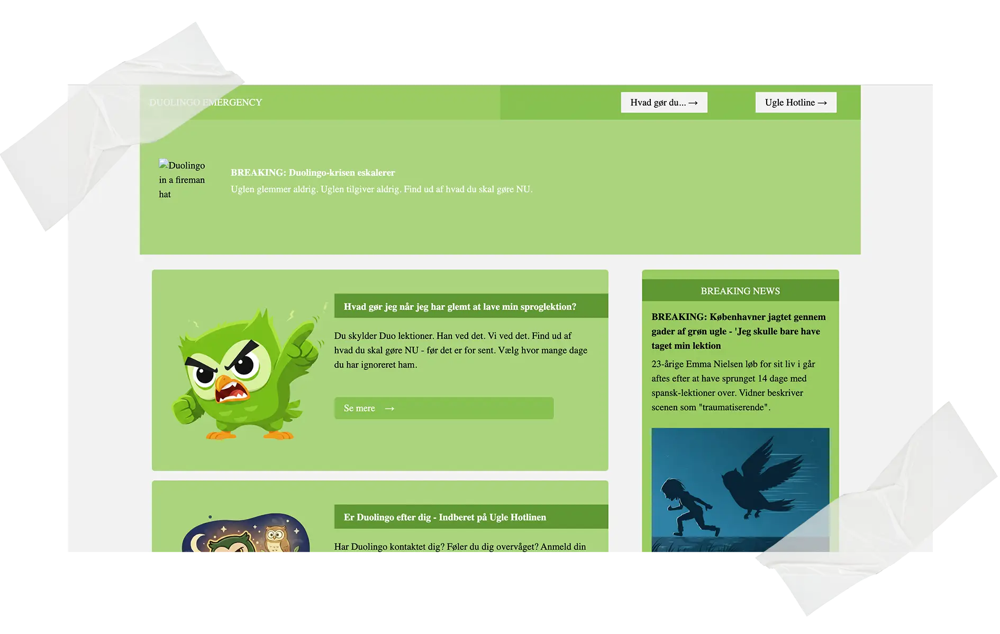

Tema 4 - Grundlæggende JS
Duolingo Emergency
Tema Beskrivelse
I dette tema har jeg arbejdet med at udvikle og forbedre en brugergrænseflade ved hjælp af Adobe Illustrator, CSS og JavaScript. Jeg har lært at arbejde med vektorgrafik i SVG og fået en bedre forståelse for, hvordan design og funktionalitet hænger sammen på et website.
Opgave Beskrivelse
Under dette tema blev vi sat til at lave et Emergency site. Vi valgte selv en nødsituation vi ville lave en hjemmeside. Vi fokuserede meget på programmet Adobe Illustrator, og lære at kode i JavaScript og lave formularer i HTML.
Proces, løsning og resultat
Igennem min proces har der ikke været lige så meget fokus på at gå igennem forskellige faser for at lave siden. Selve skelettet for hjemmesiden var allerede givet til os, så vi skulle bare lave det til vores egen.
Jeg startede ud med at finde ud af hvilken nødsituation jeg gerne ville lave min hjemmeside om, hvor jeg kom på ideen om at lave den om Duolingo der er blevet aggressiv.
Efter at have valgt emne, tog vi og lavede hjemmesiden i små steps, hvor vi statede med at fokusere på JavaScript og SVG’er i Illustrator, for at lave hotspots til hjemmesiden.
Herefter begyndte vi at lære hvordan man laver formularer i HTML, da vi skulle lave en til vores indberet side. Her lærte vi både HTML’en samt hvordan man styler det i CSS.
Til sidst havde vi fokus på forsiden hvor vi lærte at lave modaler i HTML, og havde fokus på billedgenerering med AI værktøjet Adobe Firefly. Da vi var færdige med alle siderne, skulle vi så lære hvordan man lavede darkmode på en side.
Besøg siden →